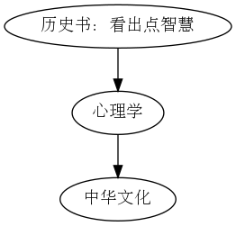

从芒种到端午：周报*|
Table of Contents
周报大概没有写得太早一说，现在上分子生物，听不懂上不下去，没什么想法，权当打字练习了。
看了眼上周，原来我当时写得还不少，有点自豪，只不过本周没，倒是心中苦涩，无以为题，就把节气作题。
实话说，想到不少，不过内心自我质疑，真的应该把它们写出来吗？就算没人看，总感到所识者见到十分不妙。我越发感到对写博客的意义不清晰了，到底这些内容，变成文字为何？
但总该先做下去。
这次做的不好。
1. 贡献——版权小盗
转载了清华续本达老师视频，每个下面都大大写着，清华大学版权所有。希望可怜我，毕竟我只是想方便倍速看。 不过 应该同时放
最后为了方便复习，转到 B 站。给老师发件未回。
2. 跆拳道——纯粹世界
每周我要上半个上午的跆拳道。 原本第一个学期学了太极相呼应，这次的确学到本领，最不同的是课程给我留下的印象。 感到运动是具有，练功好像可以一种纯粹的自我对话，自己取体验。何他人共同练习，又能够体验力量差异，灵活性的调度。 结合今天的想法，自己实在不运动，太不健康了。
3. 文章书籍：图书馆都没有
回顾了，原本是想要 我和权威的故事-王垠 感到此文很真诚，我还能在哪里看到这样回顾自己过往的文字呢1 图灵的光环-王垠 其实考据仔细，在这里找到了所说的，不过并不是就推荐，可能到了一定阶段完全就是寻找志同道合把。已有的内容都和子集的大不一样不会对推荐内容
3.1. 阿白
其实，很多东西不需要畏之如猛虎，只要他是包容性的，不是排他性的，就值得学习。

留意到华严经、
https://zhuanlan.zhihu.com/p/702025576 关键词：失传的知识，上下联系，认知的合流，同理共情
算了，就寻找到这吧，从这个引用链条就会发现，特殊函数论的复杂性，每一个非平凡的公式都建立在许多非平凡公式上，结果找来找去，很容易就迷惑了，感到畏惧。他就像一个庞大的处处关联的难以名状的物体。这就是为什么学习物理时，你看不到物理的复杂性，但物理本身是非常复杂。即使你按照书本推理了很多遍，总能发现很多难以理解的东西。他们往往依赖于数学上的复杂理论。往下深入，基本上几年时间都搞不清楚。但是，从另一个角度来说，这意味着机遇，简单的工作，人们都想做，但是，竞争也很激烈，而且也没什么可深入的，会不断的堆叠要素，就像机器学习一样，不断的堆量，实际上没有太大的进步空间。复杂代表了你连入门都很困难，竞争会小很多，而且往往能发现很不一般的东西，这些不寻常的东西才是接近于真相的东西。其实，虽然上面引用很多，实际上并不复杂，他就是积分解法求解微分方程时必然出现的理论，从这个角度往下深入，学会整个理论并不困难，只不过，对人的记忆力，计算力，直觉要求很高，函数论和数论一样基本上都是天才推动的，普通人没有能力去研究的。
作者：半数o阿白 链接：https://zhuanlan.zhihu.com/p/700043756 来源：知乎 著作权归作者所有。商业转载请联系作者获得授权，非商业转载请注明出处。
物理=数学
物理系统结构=对称性
物理系统运动=群/半群【群代表了周期，比如旋转，半群代表了有序，比如时间】
还有一种思想，那就是序，最小作用量原理，半群，时间箭头，相变，最优化。这就是对称性破缺。序与对称可以描述几乎所有的物理学理论。一个是时间发展，一个是相空间各态历经。不过，还有一个东西，那就是奇点，混沌与非线性，这个就需要后人来解决了。或许他意味着数学中的环。环的物理意义可能就是奇异性与混沌。因为非线性微分方程的解是函数环中的子结构。
4. 视频资源
农场被封了， 听了一周的献给 《阿尔吉侬的花束》
4.1. 小约翰可汗
“西部最无法无天的小镇”是哪？【神奇组织20】 现在的人文关怀月来越强烈了，这次又十分动人，一种见人的精神，不屈服一直斗争知道最后一刻。 西部精神落幕了。
4.2. 艺术～有点艺思哦
非常棒，让我一整天都沉浸思考其中
上一集（下一集）我记得徐悲鸿是一位品德高尚的人，今天我他，如何努力。
学画是件艰苦的事，希望你不要甘于趋慕浮夸，不要甘于微小的成就。
同时回顾了西方素描构型的发展：几何体从雄壮到柔美。对造型的控制。原来西方经典并不代表好
更进一步完成对人工智能进入大众生活的反思。 效仿－自己特色－自我表达
关于差异的哲思：为什么摄影要像绘画？两者何妨？ 应该坚持自己，成功真的没有一蹴而就。
从绘画这里，我深刻感到了坚持用功的重要性。画者不言，他们一直在画。
了解到色彩、笔触，回归本源，绘画是享受观察和自我表达
三种：写实、抽象、创作
4.3. 小东西：
【重构数学3/4】“分析”和“代数”是什么意思？可视化展示更清晰！ 项目的意义更大，我也作了尝试，这里有其它的图的分析
5. 我最喜欢的电影
《无问西东》
我在最合适的时候看到，触动到。
无憾矣！
6. 物理实验
今天听说选择公理，按我对他
表达的理解，似乎是一系列符号中选定我们要表达的 之前我做过这个的笔记（摘抄）但我的确是不明白的。
7. 无比失望
读费曼讲义，对以下方面非常失望：
- 没有解答自己提出的许多问题（尽管一些只是过场引入）
- 太纠结于正确＋具体，导致无比冗长
我以前就感到奇怪，今天彻底向明白我不理解是什么以方面了。我总要简化提炼，现在很不喜欢了，最大优点是所有内容都给出了自己理解。
语言能力的掌握，需要人们自己去探索，才有价值，常规课程太没意思了。太容易本末倒置。
8. 畅想
考虑写点英文内容 ;)
我的 html 处理应该不太好，这是上周想到的，其实相关评论模块可以不用写死在每个 html ，可惜更好地我暂时也不知道。
测试一些有趣的小组件。
注意到以前就是想要分享资源 优佳资源整理－数学物理生物.html 我不了解的问题.html 后者也显出现在周报雏型
我就把这个当成短评了，看上面应用的 Church 论文想起来以前各行业针对新发布论文写评论吸引人阅读
国画如何画云
听力老师，谢谢你的祝福！
我意识到我这次写不完整，太多了，我没有那么大的心力去仔细表达了。
Footnotes:
又想读王小波，暑假之前不知道能不能翻开一本…